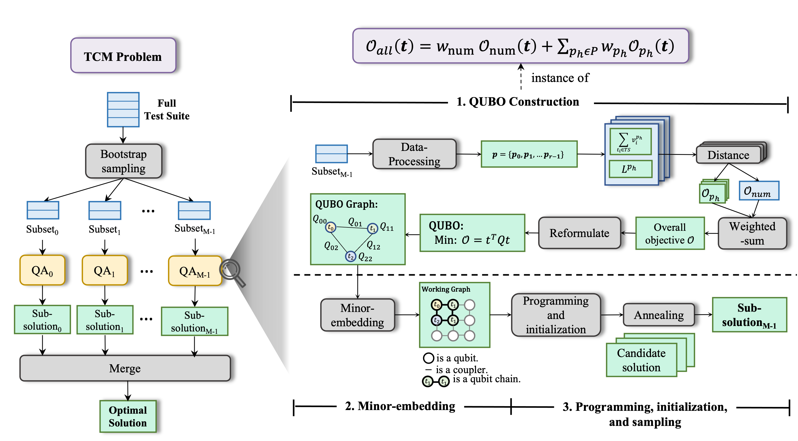
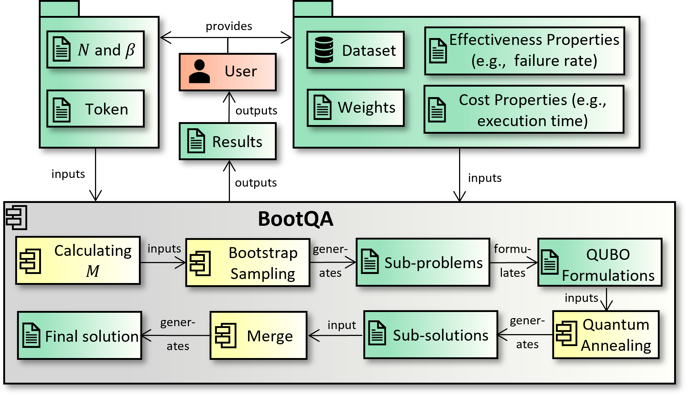
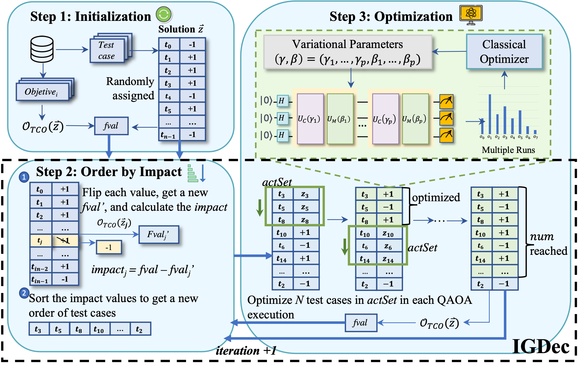
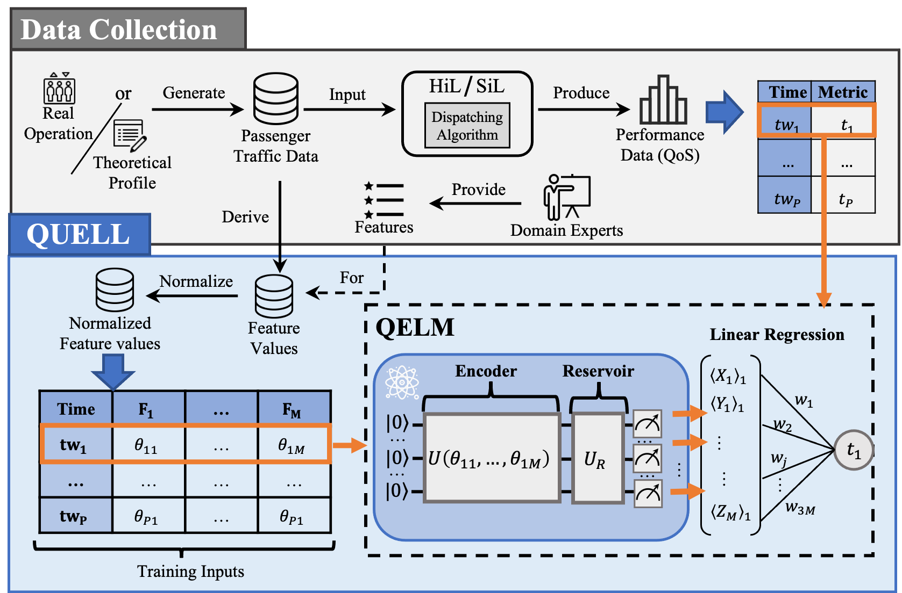

About
Classical Artificial Intelligence (AI) has been applied to solve many traditional software engineering problems, including requirements engineering, testing, and debugging. Similarly, Quantum Artificial Intelligence (QAI)—classical AI enhanced with quantum computing—has recently been used to address software engineering challenges, including test optimization, test case generation, and code smell detection. As an emerging topic in software engineering, introducing QAI to the ASE conference audience will help spark interest among young researchers, senior researchers, and practitioners. This tutorial will provide an overview of quantum computing and QAI, followed by QAI applications in classical software engineering problems, such as testing, through both quantum search and optimization, as well as quantum machine learning. We will demonstrate these applications using real-world and industrial software engineering datasets.
Our Works
QAI4SE is a collection of research works exploring how Quatum Artificial Intelligence (QAI) can be applied to various challenges in software engineering. This website showcases applications, publications, and tools developed under the Simula ComplexSE department.
BootQA: Test Case Minimization with Quantum Annealers
Authors: Xinyi Wang, Asmar Muqeet, Tao Yue, Shaukat Ali, Paolo Arcaini
Paper link: View Paper
GitHub: View Project
BQTmizer: A Tool for Test Case Minimization with Quantum Annealing
Authors: Xinyi Wang, Shaukat Ali, Paolo Arcaini
Paper link: View Paper
GitHub: View Project
IGDec-QAOA: Quantum approximate optimization algorithm for test case optimization
Authors: Xinyi Wang, Shaukat Ali, Tao Yue, Paolo Arcaini
Paper link: View Paper
GitHub: View Project
QUELL: Application of Quantum Extreme Learning Machines for QoS Prediction of Elevators’ Software in an Industrial Context
Authors: Xinyi Wang, Shaukat Ali, Aitor Arrieta, Paolo Arcaini, Maite Arratibel
Paper link: View Paper
Zenodo: View Project
